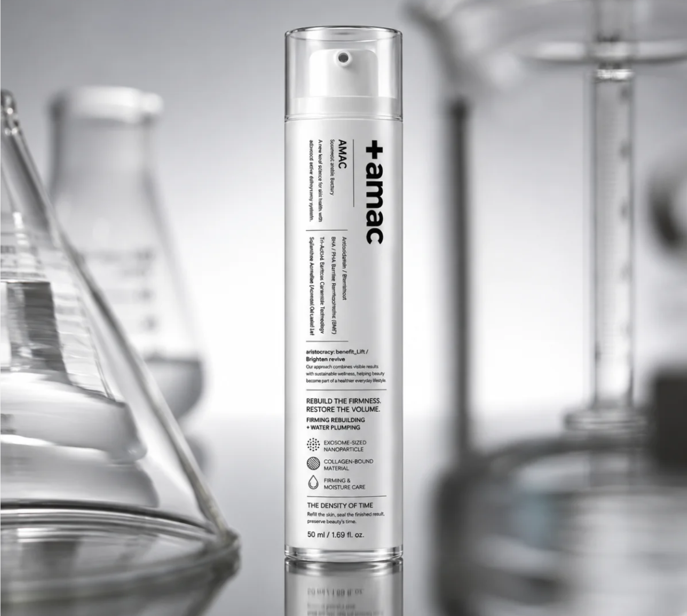
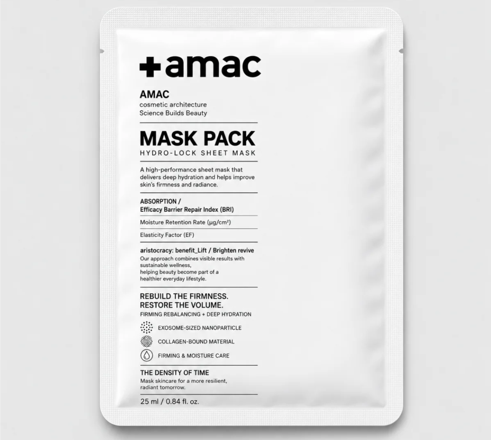
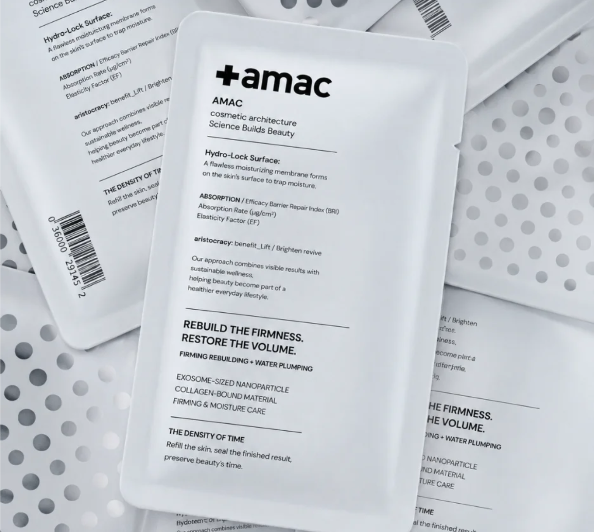
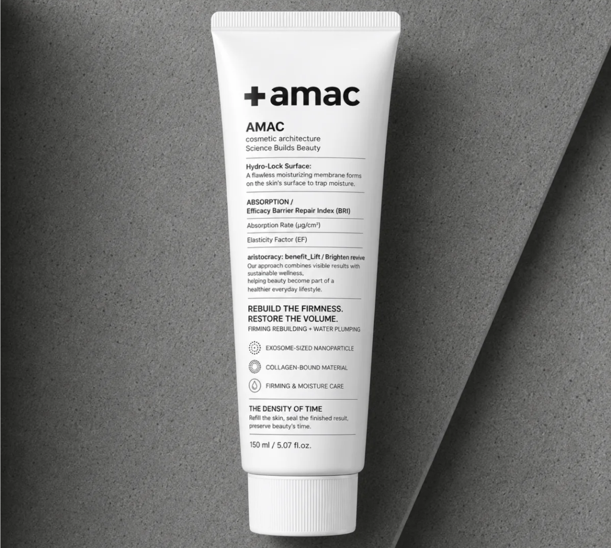
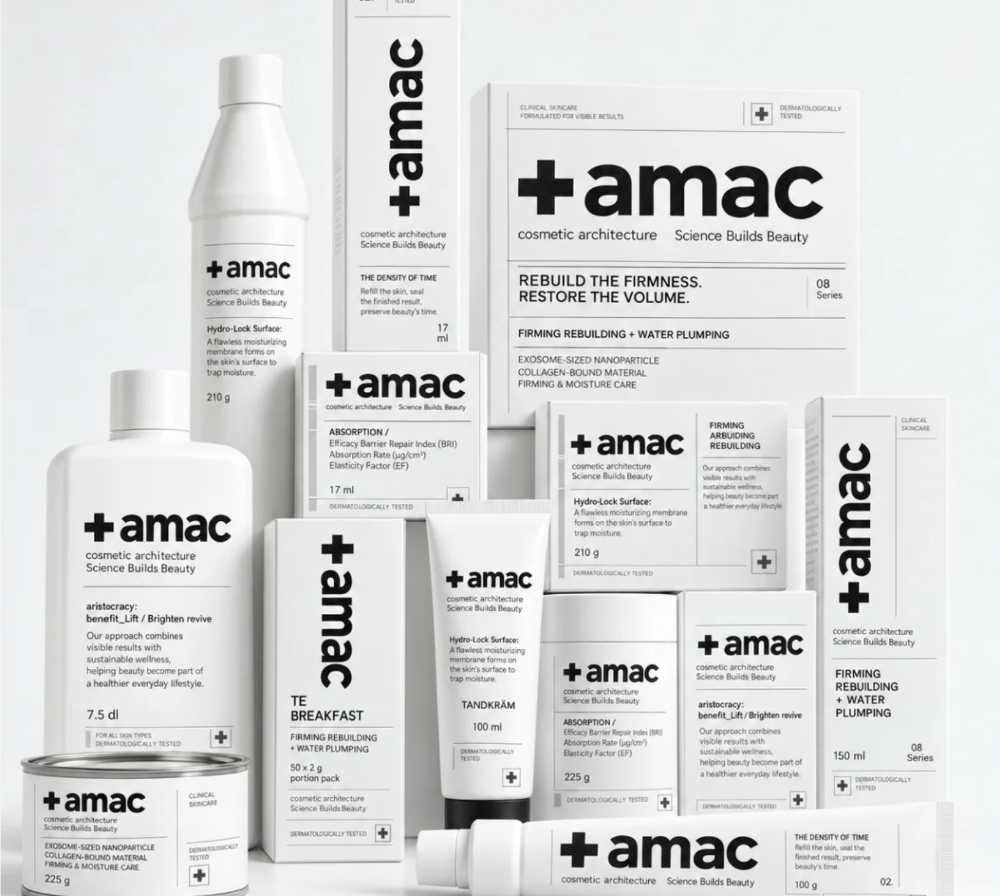
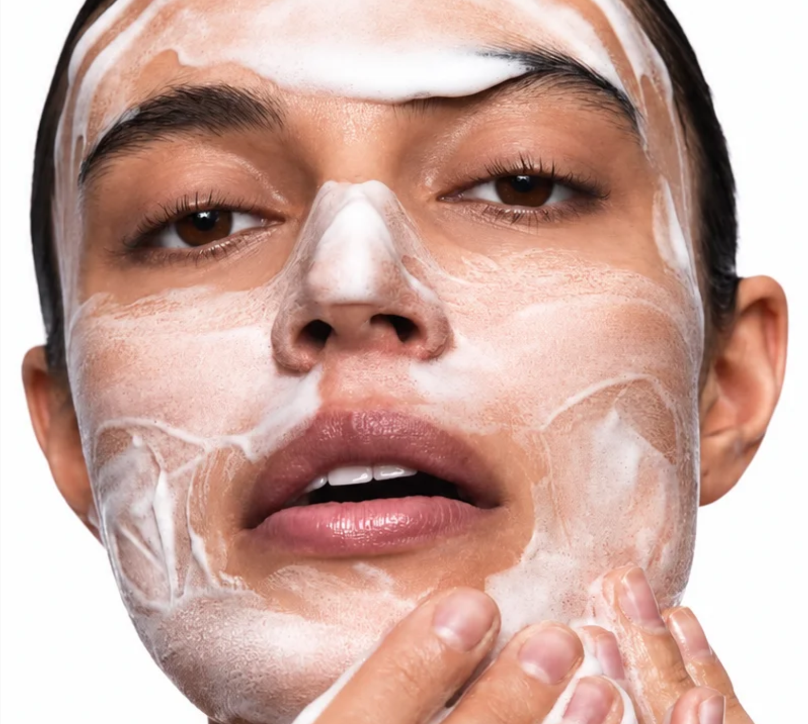
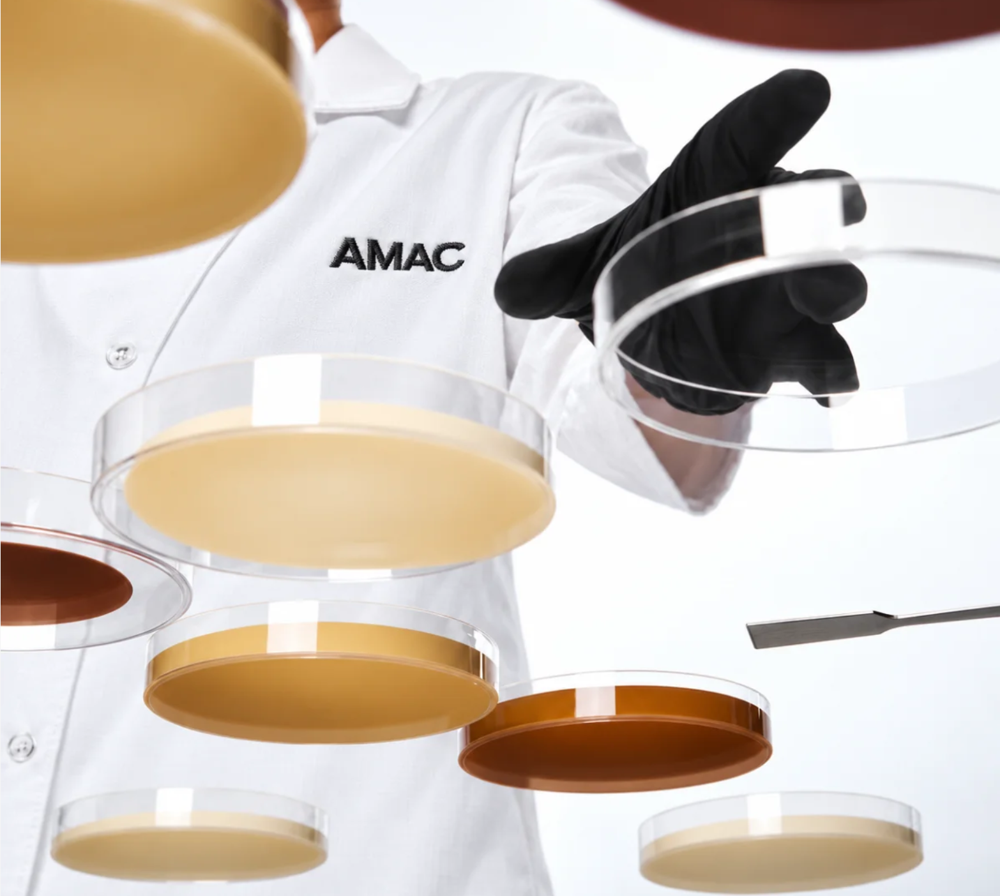
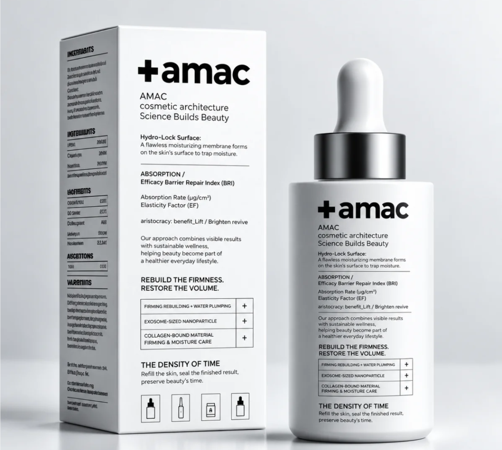
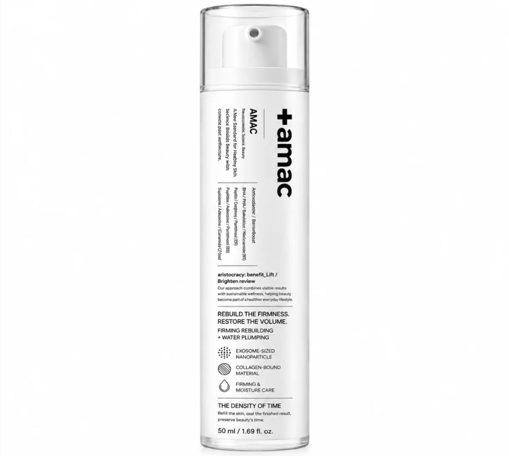
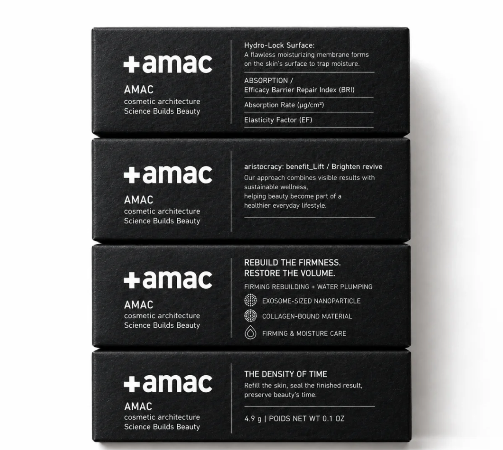

Nestled in Japan's pristine nature, Therman Wellness Resort delivers an unparalleled high-end retreat focused on mind-body rejuvenation, bespoke healing therapies, and refined Japanese hospitality.
AMAC NEURO COSMETICS
AMAC Neuro Cosmetics approaches skincare as a sensory ritual—
bringing advanced formulation and restorative touch together to
return the skin to a calmer, more resilient state.

Beyond the Surface
AMAC is inspired by the evolving understanding of the relationship between skin, sensation and stress.
Each formula is developed to work beyond immediate appearance, supporting hydration, firmness and barrier comfort while creating a more considered experience of daily care.
Care Held Close
The Hydro-Lock Sheet Mask holds concentrated moisture closely against the skin, allowing the formula to settle evenly across the face.
Cooling texture and gentle contact create a quiet interval in the day—a moment for the skin to replenish and the senses to slow.

Botanical Intelligence
Botanical ingredients are selected for their relationship with hydration, comfort and skin resilience, then studied through the precision of modern formulation.
Nature provides the starting point. Science helps reveal how each element can be delivered with consistency, stability and purpose.
The Hydro-Lock System
Hydration is most effective when the skin can retain it. The Hydro-Lock System helps replenish moisture while supporting the barrier that keeps it from escaping.
Skin feels softer, calmer and more comfortable—restored without unnecessary weight.


From Texture to Treatment
Every texture has a role. Lightweight formulas prepare the skin, concentrated treatments address specific concerns, and richer layers help preserve moisture and comfort.
Together, they form a routine that can be adjusted according to the skin’s condition rather than fixed around a single method.
The AMAC Collection
Cleansing, hydration, targeted care and protection are considered as connected stages of one system.
Each AMAC formula performs a distinct function while working naturally with the others, creating a complete routine that remains precise, intuitive and easy to sustain.

Signals of Renewal
Selected peptide-based actives form the centre of AMAC’s advanced skincare approach.
They are incorporated to support smoother-looking skin, improved resilience and a stronger sense of firmness.
Delivered through refined serum textures, concentrated care reaches the skin without overwhelming it.

A Calmer Beginning
Effective care begins with cleansing that respects the skin. Impurities and daily residue are lifted away while essential comfort is preserved.
Soft foam and deliberate touch turn the first step of the routine into a sensory reset, leaving the skin fresh, balanced and ready for what follows.


Every Element Has a Role
AMAC formulas are developed through close observation of texture, compatibility and stability. Ingredients are evaluated not only individually, but also by how they perform together.
Nothing is included simply for effect. Every component contributes to efficacy, sensory comfort or the integrity of the formula.
Concentrated, Never Excessive
A concentrated serum delivers focused care through a light, responsive texture. A few measured drops spread easily, allowing the formula to become part of both morning and evening rituals.
Advanced skincare becomes simpler when every application is intentional.


Firmness, Reconsidered
Firmness is supported through consistent care rather than temporary intensity. This concentrated formula helps improve the appearance of elasticity and volume while maintaining a comfortable finish.
Skin feels supported and composed, with a texture made for daily use.
Preserving the Formula
AMAC packaging is created as part of the formulation system. Controlled dispensing and protective structures help limit unnecessary exposure while preserving the quality of the product inside.
Its restrained exterior reflects the same clarity and precision found throughout the collection.
